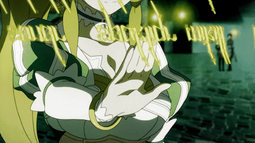
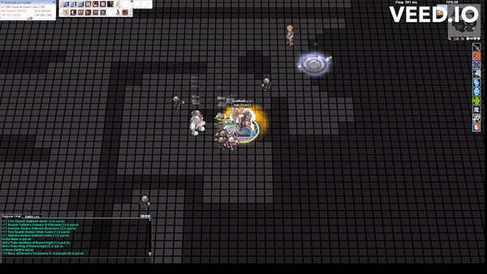
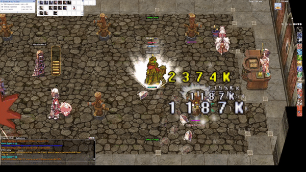
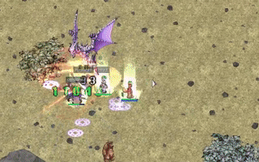
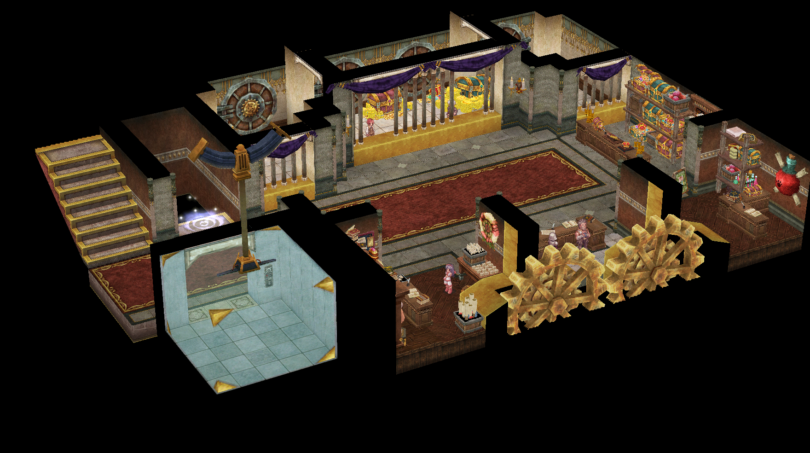
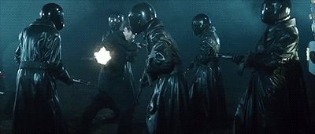

File list
This special page shows all uploaded files.
{kind=link}
{kind=link}
| Date | Name | Thumbnail | Size | User | Description | Versions |
|---|---|---|---|---|---|---|
| 14:57, 4 May 2023 | Tate-no-yuusha-naofumi.gif (file) |  |
1.56 MB | G00suede | 1 | |
| 23:57, 3 January 2023 | ED.gif (file) |  |
1.57 MB | G00suede | 1 | |
| 18:30, 6 October 2016 | Character Ranger2.png (file) |  |
1.6 MB | Inberun | 1 | |
| 23:10, 9 January 2016 | Disorted16thNight.gif (file) |  |
1.61 MB | Pruu | 2 | |
| 05:55, 19 October 2022 | Zaedronath Tornado.gif (file) |  |
1.62 MB | HairyWizard | 1 | |
| 03:36, 30 May 2020 | ABillus.png (file) | 1.62 MB | Airin | Archbishop image for Airin's Guide. Source: https://www.pixiv.net/en/artworks/65302805 | 1 | |
| 02:54, 3 July 2017 | TigerCannonCombo.gif (file) |  |
1.66 MB | Palderon | Animation of Tiger Cannon Combo | 1 |
| 10:00, 16 April 2022 | Miyu1.jpg (file) | 1.7 MB | Miyu | 1 | ||
| 21:20, 20 November 2022 | Rkberserk.gif (file) |  |
1.71 MB | Nithraniel | 2 | |
| 03:05, 3 July 2017 | SuraSPRestore.gif (file) |  |
1.71 MB | Palderon | How to restore your own SP as Sura | 1 |
| 19:38, 16 September 2017 | Ep16 hallmap.png (file) |  |
1.73 MB | DualityDiscretion | 2 | |
| 06:36, 19 April 2022 | Spell Chanting 2.gif (file) |  | 1.74 MB | Miyu | 1 | |
| 02:53, 3 July 2017 | GatesofHellCombo.gif (file) | 1.75 MB | Palderon | Animation of Gates of Hell Combo | 1 | |
| 21:55, 13 February 2017 | Archersobbing.gif (file) |  |
1.76 MB | RadenWA | 2 | |
| 09:42, 7 June 2023 | EarthDrivenew.gif (file) |  |
1.79 MB | G00suede | 1 | |
| 16:24, 10 July 2020 | BP RG Max ASPD.gif (file) | 1.79 MB | G00suede | 1 | ||
| 06:38, 19 April 2022 | Spell attack.gif (file) | 1.8 MB | Miyu | 1 | ||
| 03:00, 3 July 2017 | FlashCombo.gif (file) | 1.8 MB | Palderon | Flash Combo Animation | 1 | |
| 03:05, 8 May 2019 | Zonemap.png (file) |  |
1.8 MB | Panic | 1 | |
| 01:31, 18 January 2023 | ShieldPressDiadem.gif (file) |  |
1.81 MB | G00suede | 1 | |
| 01:13, 18 January 2023 | NewCS.gif (file) |  |
1.81 MB | G00suede | 1 | |
| 00:48, 4 January 2023 | GuardianShield.gif (file) |  | 1.83 MB | G00suede | 1 | |
| 18:39, 1 November 2019 | Conan edognarwa doram.jpg (file) | 1.83 MB | Conan | Pretty much a picture of my doram that I am using for my guide. | 1 | |
| 08:00, 22 November 2022 | EDNew.gif (file) |  |
1.83 MB | G00suede | 1 | |
| 01:22, 18 January 2023 | ShieldChainNEw.gif (file) |  | 1.84 MB | G00suede | 1 | |
| 21:59, 9 January 2016 | First Wind Scaled.gif (file) |  |
1.85 MB | Pruu | 1 | |
| 20:05, 19 October 2022 | Zaedronath Firestorm.gif (file) |  | 1.86 MB | HairyWizard | 1 | |
| 15:11, 4 May 2023 | Kyrielight-mash.gif (file) |  |
1.86 MB | G00suede | 1 | |
| 10:35, 2 April 2023 | EDSpam.gif (file) |  |
1.91 MB | G00suede | 1 | |
| 00:26, 4 January 2023 | Overslash.gif (file) |  |
1.92 MB | G00suede | 1 | |
| 07:18, 19 October 2022 | Dragon Jump.gif (file) | 1.95 MB | Osa700 | 1 | ||
| 00:34, 4 January 2023 | New CS.gif (file) |  |
1.95 MB | G00suede | 1 | |
| 23:28, 17 November 2022 | OB (2).gif (file) | .gif) |
1.97 MB | G00suede | 1 | |
| 00:43, 4 January 2023 | ROGCross.gif (file) |  |
1.98 MB | G00suede | 1 | |
| 06:35, 19 April 2022 | Anime-spells.gif (file) |  |
1.98 MB | Miyu | 1 | |
| 00:10, 4 January 2023 | SPSS.gif (file) |  |
1.99 MB | G00suede | 1 | |
| 04:12, 18 March 2019 | Treasury.png (file) |  | 1.99 MB | Panic | 1 | |
| 23:31, 17 November 2022 | OB3.gif (file) |  |
1.99 MB | G00suede | 1 | |
| 12:00, 7 November 2020 | Weiss sonicwave.gif (file) |  |
2 MB | Nithraniel | 1 | |
| 17:22, 9 January 2021 | 172chess02.png (file) | 2.03 MB | Zrzovous | 1 | ||
| 04:02, 18 March 2019 | Gym.png (file) | 2.05 MB | Panic | 1 | ||
| 17:22, 9 January 2021 | 172chess01.png (file) | 2.06 MB | Zrzovous | 1 | ||
| 23:00, 9 January 2016 | AfterCharm.gif (file) |  |
2.12 MB | Pruu | 2 | |
| 04:14, 18 March 2019 | StyleB.png (file) |  |
2.12 MB | Panic | 1 | |
| 06:39, 5 March 2021 | Desperadospammer.gif (file) |  | 2.14 MB | Kancell | irl rebellion | 1 |
| 23:06, 9 January 2016 | DisortedMaxHPSP.gif (file) |  |
2.14 MB | Pruu | 2 | |
| 04:10, 18 March 2019 | Crownest.png (file) |  |
2.14 MB | Panic | 1 | |
| 14:47, 9 July 2020 | CAP Shield Throw.gif (file) | 2.15 MB | G00suede | 1 | ||
| 06:02, 1 April 2017 | Killing Strike.gif (file) |  |
2.22 MB | Game | 1 | |
| 06:03, 1 April 2017 | Pure Leap.gif (file) | 2.23 MB | Game | 1 |
{kind=link}
{kind=link}
{kind=link}
{kind=link}
{kind=link}
{kind=link}
{kind=link}
{kind=link}
{kind=link}
{kind=link}
{kind=link}
{kind=link}
{kind=link}
{kind=link}
{kind=link}
{kind=link}